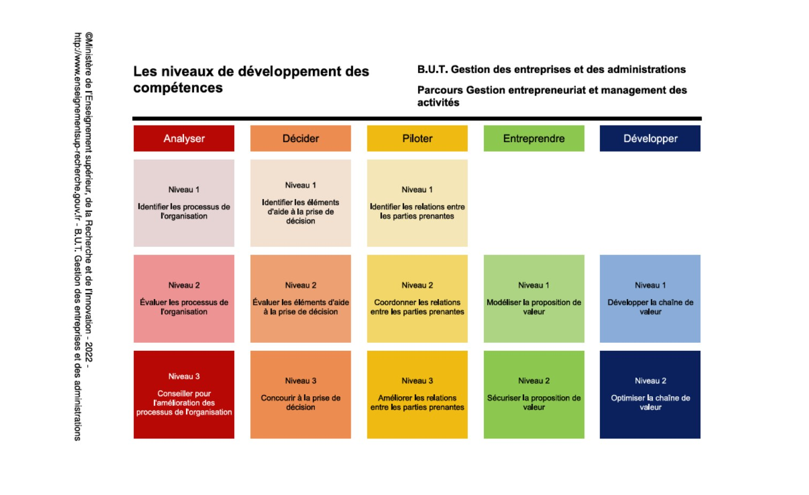

Ma cartographie de compétences
Basée sur le référentiel officiel du BUT GEA, parcours Gestion Entrepreneuriat et Management des Activités (GEMA), et illustrée par mon stage de fin d'études au Carlton Cannes, le projet entrepreneurial Zéphyra et la SAÉ Emeis.
Les 5 compétences du diplôme

Analyser
Analyser les processus de l'organisation dans son environnement.
Niveau atteint : 3/3 — Conseiller pour l'amélioration des processus de l'organisation.
Maîtrise confirméePreuve : dans la SAÉ Emeis, analyse d'articles de presse, d'avis de familles et de la communication du groupe pour comprendre les causes profondes d'une crise de réputation ; au Carlton Cannes, analyse des processus d'intégration des collaborateurs.
Voir la preuve détaillée →Décider
Aider à la prise de décision.
Niveau atteint : 3/3 — Concourir à la prise de décision.
Maîtrise confirméePreuve : dans la SAÉ Emeis, élaboration de recommandations stratégiques (transparence, accompagnement des familles) à partir de l'analyse collective ; chez Rakuten France, traitement de données pour appuyer les équipes marketing digital.
Voir la preuve détaillée →Piloter
Piloter les relations avec les parties prenantes de l'organisation.
Niveau atteint : 3/3 — Améliorer les relations entre les parties prenantes.
Maîtrise confirméePreuve : au Carlton Cannes, co-organisation du cocktail de début de saison réunissant plus de 800 collaborateurs, en coordination avec plusieurs services de l'hôtel ; chez JD Sport, coordination en équipe de vente sous forte affluence.
Voir la preuve détaillée →Entreprendre
Concevoir la stratégie de création de valeur.
Niveau atteint : 2/2 — Sécuriser la proposition de valeur.
Solide, à approfondirPreuve : projet entrepreneurial Zéphyra (lunettes de soleil modulables), étude de marché, Business Model Canvas, positionnement de marque. Note de 10/20 à la première soutenance, retravaillée jusqu'à 18/20 au Village des Talents.
Voir la preuve détaillée →Développer
Assurer la gestion et le développement de la chaîne de valeur.
Niveau atteint : 2/2 — Optimiser la chaîne de valeur.
En progressionPreuve : au Carlton Cannes, contribution à la gestion opérationnelle des ressources humaines ; chez JD Sport, participation au développement commercial du point de vente (mise en rayon, attractivité, stocks).
Voir la preuve détaillée →Compétences transversales
En complément du référentiel officiel, les qualités humaines et méthodologiques que mes expériences ont le plus renforcées.
- Organisation
- Communication
- Collaboration
- Analyse
- Autonomie
- Adaptabilité
Ce que j'apporte à mes futurs employeurs
Les outils que je maîtrise au quotidien, et les langues et la mobilité qui complètent mon profil pour des missions à l'international.
Outils
- Pack Office
- Canva
- Notion
- Teams
- Google Workspace
- ChatGPT
Langues & mobilité
- Anglais — B2
- Espagnol — B2
- Permis B, véhiculée